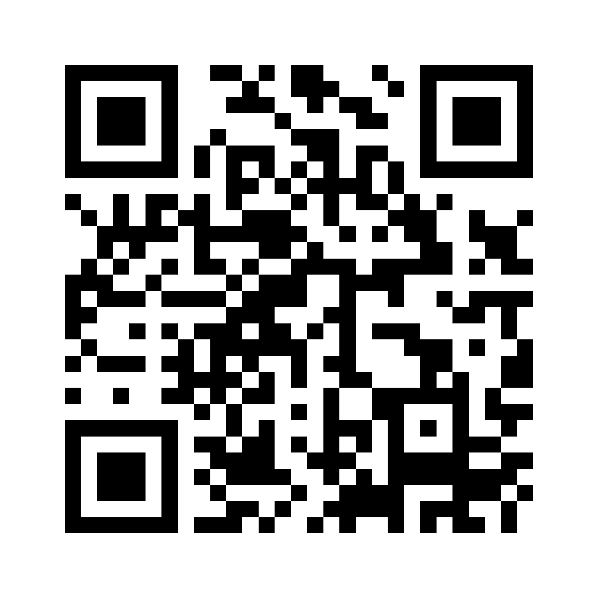

小平の子育て家庭へ
ぼんぼやーじゅ通信
小平の 週末おでかけ便
今週末、どこ行こう？
毎週水曜の朝、LINEにとどきます
公園も、児童館も、雨でも行ける場所も。小金井公園や多摩六都科学館など
ぜんぶ無料。年齢の目安つきです。
裏面に、届く紙面の見本があります

詳しくはこちら
bonvoya.nicomaru.tokyo
お名前やご住所の入力はいりません。合わなければ、いつでも解除できます。
発行：ぼんぼやーじゅ通信の会（小平市・花小金井）／小平市民活動支援センター あすぴあ 登録団体（第254号）
お問い合わせ tokyo.papa.home@gmail.com ／ イベント情報の掲載は無料です